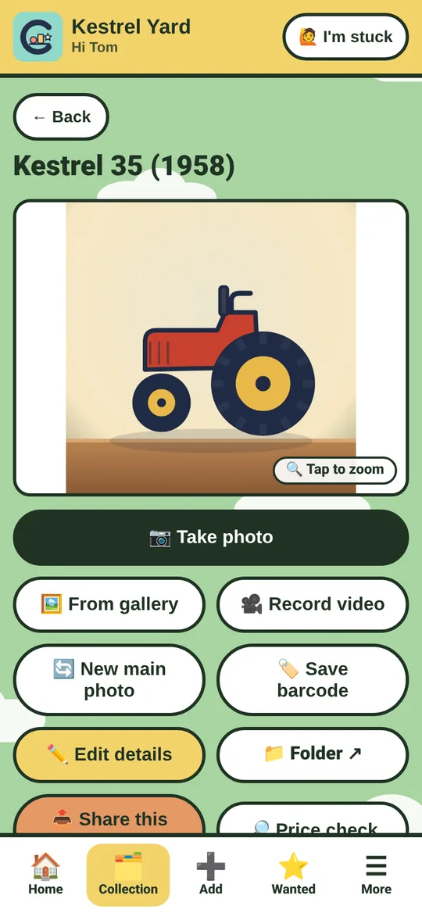
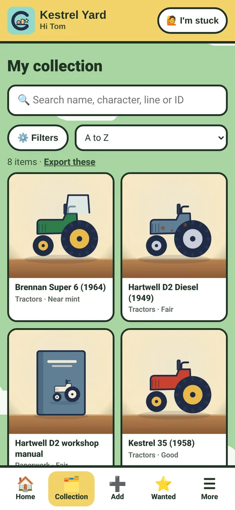
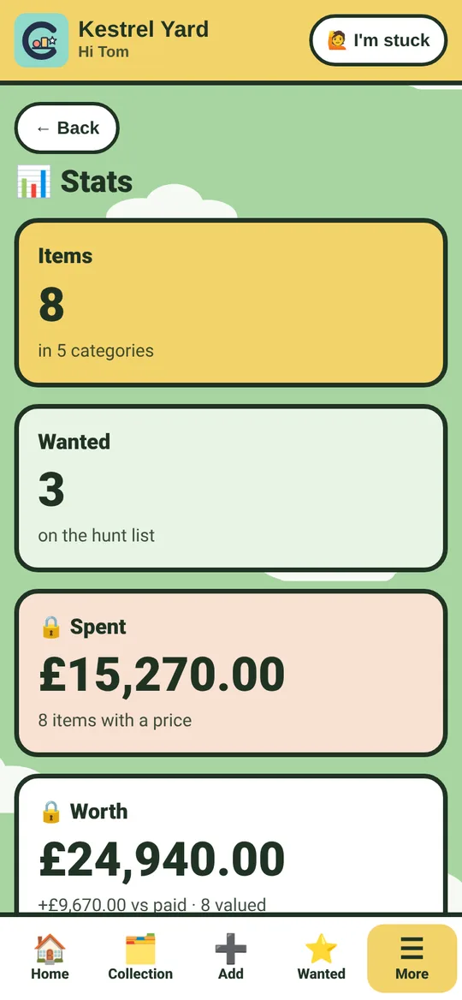
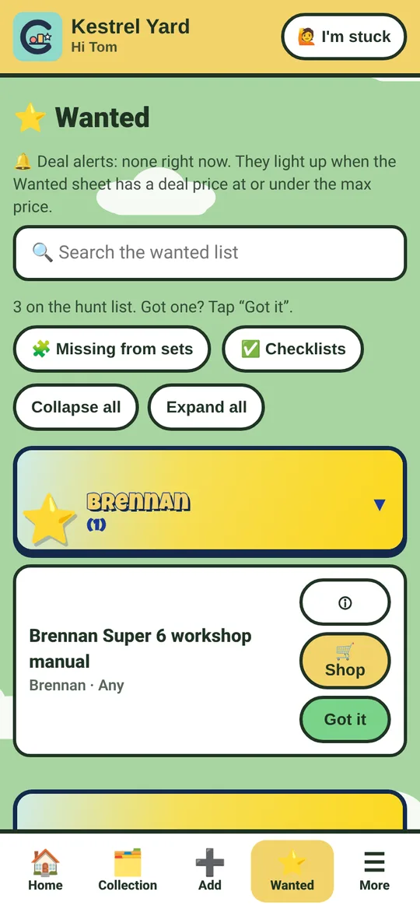
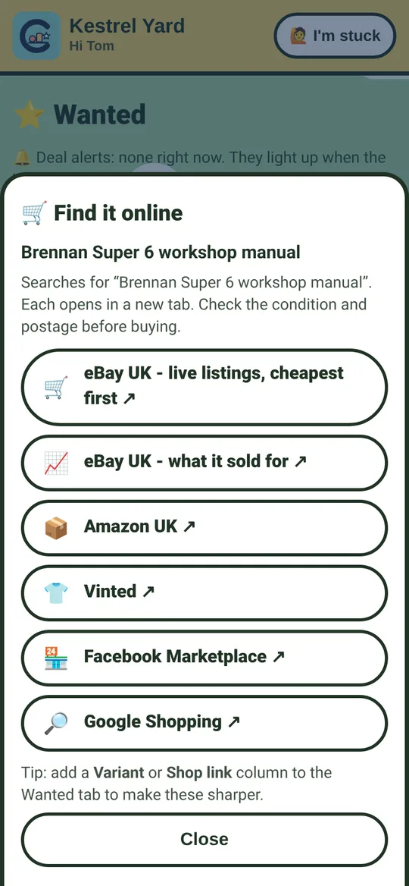

Example
Kestrel 35 (1958)
- Year built
- 1958
- Serial no.
- K35-114782
- Restored
- Yes
£8,500+£4,300 vs paid
Example collection · invented data
Vintage tractors & memorabilia
Tom restores old tractors and collects everything around them: dealer signs, tin toys, manuals and show rosettes. In Collecson the tractors carry their year, serial number and restoration state, with a full service log of every job and what it cost.
T“Kestrel Yard” · Tom, Herefordshire (an invented collector)


Your own fields
Out of the box Collecson knows names, photos, condition, year and value. For this collection the owner tapped ＋ Add field a few times:
Example item · Tractors
Kestrel 35 · Good · Loose
🔒 Money fields and log costs only show after the owner unlocks with their PIN. Family can fill in the other fields; Kid mode never shows prices.
The collection
Each one has its own photo folder in Drive and a row in the owner’s Google Sheet. These are illustrations of invented items.
In the app
Real Collecson screens, running the invented example collection.



Value
Paid, worth and the difference, item by item. Only the owner sees money.
Wanted list
Each wanted item keeps a max price and notes. In the app one tap opens live searches: eBay UK (live and sold), Amazon UK, Vinted, Facebook Marketplace and Google Shopping, or the owner’s own saved shop link.
Kestrel · Good · Not a reproduction
Brennan · Any · Original or good copy
Hartwell · Fair or better · Single-sided is fine
On this page the shop buttons are examples only. In the app they’re search links: they don’t guarantee the lowest price, and no shop pays to appear.


More examples
ROOM FOR WHAT YOU LOVE
Collecson works for tractors and just about anything else you collect. It isn’t on sale yet: no payment, sign-up or public template link.